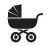

Attaaaa
Neler Bekliyor?
Valla başınıza tam olarak neler gelebileceğini bir Allah bilir. Gideceğiniz attanın ne kadar uzak bir atta olduğuna göre değişir. Sen ne giydireceğine bir gün önceden karar verirsin, o kapıdan çıkar çıkmaz sırtına kadar kaka yapıp seni şaşkına çevirebilir. Doyurup da çıkayım birkaç saat rahat edeyim dersin, o bütün yediklerini arabada çıkartır ve başa dönersin. Bütün gün uslu uslu evde duran çocuk bir anda hareketlenir ve sen onun eline ne verip de oyalayacağını bilemezsin. Bunların hepsi olabilir. Fakat olmayabilir de. Diyorum ya, ne yapacakları hiç belli olmaz. Değişmeyen tek şey vardır: Annenin taşıdığı kocaman çanta.
Atta Önerileri:
- Tamam çanta yapıp yanında götürüyorsun ama bir tane de yedek bir çanta yap ve arabanın bagajında bulundur. İçinde bez, ıslak mendil, yedek kıyafetler, battaniye artık o dönem en çok ne kullanıyorsanız koy. Bir yerde ihtiyacın olur.
- Bebek çantası alırken çok dikkat et. Bol cepli, pratik, şık, sırtına da asabileceğin türden olursa fena olmaz.
- Yedek kıyafet koy ve hiçbir şeyi atlama. Bazen kusunca fışkırarak kusuyorlar ve çorapları bile batabiliyor.
- Çantada ince bir battaniye bulundur. Gerekirse üstüne örtersin. Olmayacak yerde altını almak zorunda kalırsan altına serersin. Bebek arabasına güneş gelir cibinlik yaparsın. Yaratıcılıkta sınır yok.
- Eğer bebek mama ile besleniyorsa, küçük bir termos, bir de mama kabı öneririm. Bir öğünde ihtiyacı olan toz mamayı koyuyorsun ve her seferinde yeniden mama ölçeklemen gerekmiyor.
- Emzik kutusu. Yanına iki yedek emzik almadan çıkmayacaksın dimi? Şaka gibi.
- Bebek bezini, ıslak mendili zaten alıyorsun. Bir de o ikilinin yanına, kirli bezi koyabileceğin minik çöp torbalarından koy.
- Ufaklığın ilgisini çekecek birkaç oyuncak at çantaya.
- Şimdi hazırsın.
Eğer yolculuk uzunsa, kolay gelsin. Kimi çocuk arabayı çok seviyor, kimi çocuk nefret ediyor. Mete’yi arabaya atıp dünya turu yapabilirim mesela. Tuna’yla kreşe gitmek bile ayrı bir olay. Evdeyken dinlediği ve sevdiği müziklerin aynısından arabada da var. Tavsiye ederim, bir müddet oyalıyor. Çocuklarla birlikte ilk uzun yol deneyimimizde kendime bir tane çanta yapmıştım. İçinde ne alaka diyebileceğin onlarca obje vardı. Aklıma gelenleri yazayım: Tahta kaşık, kumaş kartelası, fotoğraf albümü, hayvan kartları, cep aynaları, içine küçük çakıl taşları konmuş küçük su şişeleri (bunun çıkarttığı sesleri çok seviyorlar), renkli ve parlak kağıtlar vs. Tahmin edersin çocuklar değişik şeylerle oynamayı sever. Hepsini beş dakika inceler ve atar. Böyle bir çanta bir saatini kurtarabilir. Bir saat de bunlarla geçirdiniz sayalım. Yolun birazını da uyuyarak geçirin, olsun bitsin. Zaten benim uzun yol dediğim en fazla 4 saat. Daha uzunu beni bozar.
Fakat tüm bu gezilerde daha kesin çözüm istiyorsan, tablet bilgisayar diyorum. İçine döşeyeceksin çizgi filmi, pilini fulleyeceksin sonra ver eline oynasın. 6 aylıktan 60 yaşına gelene kadar her yeri gezebilirsiniz beraber.
Tabii bir de yatılı misafirlikler, tatiller falan var. Biz yaz tatillerimizin 15 gününü (zaten 15 gün tatilim var) köyümüzde geçiriyoruz. Gittiğimiz yerde her şeyi bulabileceğim marketler, eczaneler vs. olmadığı için tedarikimi iyi yapıp da gidiyorum.
Mesela makyaj çantalarımdan birini çocuklara ilaç çantası yaptım. İçinde bir tane ateş düşürücü şurup, bir kutu ateş düşürücü fitil, ateşölçer, yara bandı, burun spreyi, burun temizleme aleti, böcek ısırıkları ve yanıklar için pomat koydum. Birkaç günlük seyahatlerde bu küçük çantayı valize koyuyorum ve koyarken inşallah hiç ihtiyaç duymam diye dua ediyorum. Zira hasta çocuktan daha zor bir şey varsa, o da seyahatteyken hastalanan çocuktur.
Tatil deyince, valiz hazırlamak bana eziyet gibi geliyor. Hele bir de o valizleri boşaltmak çekilecek dert değil. Çocuklar için ayrı, bizim için ayrı valizler hazırlıyorum ve çocukların valizini hazırlarken hiç zorlanmıyorum. Zaten bu arkadaşların eşyaları küçücük, çok az yer kaplıyor. Çekiyorum valizi gardırobunun önüne hepsini dolduruyorum. Böylece tatildeyken, tüh keşke şunu da getirseydim, aman hiç badimiz kalmadı, alt pijamaların hepsi de kirlendi, hava da sıcakmış keşke daha ince bir şeyler getirseydim, gibi cümleler kurmuyorum. Dönüşte de hazır dolap boşalmışken dolabı silip öyle yerleştiriyorum. Bir de çocuklar için ayrı bir oyuncak valizi yapıyorum.
Nerede konaklayacak olursan, sana mutlaka temiz yorganlar ve yastıklar verilip temiz çarşaflar serilecektir. Amma herkesin evinde bebek yastığı, battaniyesi var mı ki? Çocuklar biraz büyüyene kadar çocukların yastıklarını da yanımda götürüyordum. Böylece onu da koy bunu da koy derken, bagaj doluveriyor ve artık başka bir şey koyamayacağına emin olduktan sonra evin içinde fıldır fıldır bakınmayı bırakıyorsun.
 Sıkıcı Tarafı
Sıkıcı Tarafı
- Arabada kusan çocuk: Üstü başı kirlenir, araba kirlenir, oto koltuğu kirlenir. Önce çocuğu temizlersin, sonra oto koltuğunu. O koltuk ıslanır. Çocuğu temiz kıyafetiyle oturtamazsın. Koltuğa serecek bir şeyler arar bulamazsın. Bir şeyler uydurur tekrar yola çıkarsın ve yolun geri kalanını kusmuk kokusunu teneffüs ederek geçirirsin.
- Yol boyunca ağlayan çocuk: Hele bir de arabayı sen kullanıyorsan bittin.
- Tatildeyken hastalanan çocuk: Az önce bitmediysen, şimdi kesin bittin.
 Eğlenceli Yanı
Eğlenceli Yanı
- Bebek arabasında bir saat sağa sola bakınan sonra kendiliğinden uyuyup iki saat uyanmayan, o sırada gezmene, yemeğini yemene, çayını kahveni içip iki lafın belini kırmana müsaade eden çocuk: Bazen oluyor öyle, ciddi diyorum. O gün sen seçilmiş insan oluyorsun, evren bütün enerjisini sana kanalize etmiş oluyor sanki. Kendini hayal aleminde zannediyorsun, ne yapacağını bilemiyorsun , bu mucizeyi şaşkınlıkla izliyorsun.
- Arabada çalan güzel bir şarkıya hep birlikte tempo tutmak çok keyifli geliyor bana. Filmlerdeki gibi hani. Üç yılda iki kere falan denk geldi, çok iyi hissettim.
- Alışveriş merkezlerinde çocuklar için yapılan oyun alanları çok eğlenceli. Bir kere çocuk 3 yaşına gelene kadar ebeveyn gözetiminde girebiliyorsun. Bu demek ki, sen de kaydıraktan kayabilir ve top havuzuna düşebilirsin.
Avm dedim de aklıma geldi.